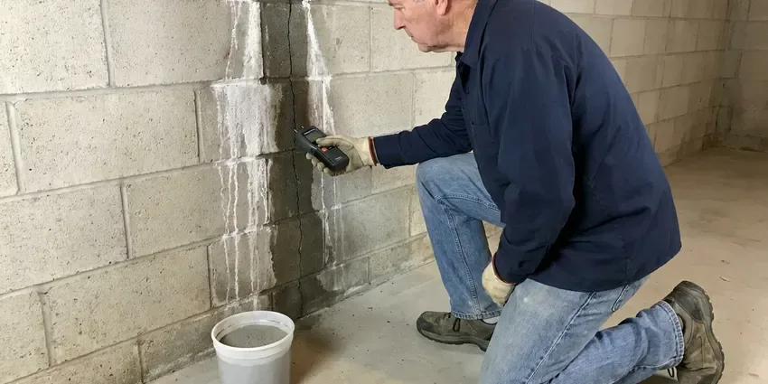

Clogged Drain Repair in Jonesboro, AR
Sink full of water and the plunger is not doing it? DGR Plumbing clears clogged drains in Jonesboro, AR with a machine sized to the line.
- Camera Checks on Repeat Clogs
- Kitchen Sink, Bath and Laundry Lines
- Licensed Plumbers
- Upfront Quotes

Get the Water Moving Again in Jonesboro, AR
If the clog keeps coming back, we put a camera down the line and show you why.
Kitchen Sink, Bath and Laundry Drain Clearing in Jonesboro, AR
DGR Plumbing clears drains without caustic chemicals. Those can damage ABS and cast iron. We use drum augers, sectional cables and small hydro jetters, matched to the drain so fixtures stay unscratched and old trap arms stay in one piece.
Work we handle every week:
- Descaling cast iron and plastic drain lines
- Tub and shower hair removal without fixture damage
- Toilet clearing with a toilet auger

Additional Plumbing Maintenance Services in Jonesboro, AR
Our maintenance and specialty plumbing services in Jonesboro, AR catch small problems before they become emergencies.


Customers
Why Choose DGR Plumbing for Clogged Drain Repair in Jonesboro, AR?
The first question we ask is what went down the drain. The answer changes the tool. Grease needs scouring, while hair needs a head that hooks and pulls it out rather than poking through, and scale needs a jetter or a descaling chain.
- After-Hours Help, Evening and weekend calls are taken for backups that cannot wait.
- Straight Pricing, The price is set before the cable comes out.
- Right Cable, We match the cable size and cutter head to the pipe diameter and material.
Citywide Coverage
Kitchen, bath, laundry, garage, basement, every drain in the house is fair game. Small businesses as well. Our service area includes Jonesboro and nearby communities, with the same licensed techs and the same guarantee on every call.
Experienced Team
Every tech is trained on drum machines, sectional cables and compact jetters. Old pipe gets a gentle hand. They know how hard to push before a rusted line cracks, and how to protect thin trap arms, chrome finishes and porcelain while they work.
Safety-First Approach
Any trap or fitting we take apart gets put back to code. Slope and venting matter. We reassemble with new washers when needed, then run water and look for leaks before leaving.
Trusted Certified Jonesboro Plumbing Services Professionals
At DGR Plumbing, we take pride in licensed, certified plumbing services throughout Jonesboro, AR. Those papers on the wall mean something. Every repair, install and maintenance visit follows strict safety and quality rules, and the plumbers doing the work carry recognized industry credentials.
Call Us Now PHCC Plumbing Contractor Recognition
PHCC Plumbing Contractor Recognition Better Business Bureau (BBB) Accreditation
Better Business Bureau (BBB) Accreditation Angi Certified Pro
Angi Certified Pro ISO 9001 Quality Management Certification
ISO 9001 Quality Management CertificationSink, Tub, Laundry and Floor Drain Repair in Jonesboro, AR
Emergency Clogged Drain Service in Jonesboro
Backups seem to happen right before guests arrive. It never fails. Our emergency technicians come with full drain equipment, and when several fixtures are backing up at once we go straight to the main line because that is almost always where the clog is. Hold off on flushing until we arrive.

Emergency Clog Removal in Jonesboro
An overflowing toilet during a holiday dinner does not wait for business hours. We answer after hours. DGR Plumbing sends a technician in Jonesboro with cables, augers and a jetter so one visit handles it. You hear the after-hours rate up front.
Floor Drain and Garage Drain Clearing in Jonesboro
Floor drains in garages, utility rooms and basements collect sand, dirt and debris. A dry trap lets sewer gas in. We clear the drain and the line behind it, refill the trap and install a trap seal if it rarely gets water. A sewer odor usually means the trap is empty.
Commercial Clogged Drain Solutions in Jonesboro, AR
Businesses in Jonesboro, AR cannot close a restroom for a day. Speed matters a great deal. DGR Plumbing clears salon sinks packed with hair, kitchen floor sinks and office restroom drains, often during off hours. We can also set up a jetting schedule that matches how fast your lines build up.
Kitchen Sink Clog Repair in Jonesboro
Kitchen sinks clog from grease that cools and hardens on the pipe wall. Then food scraps and soap pile on. We pull the trap, run a cable through the trap arm and down the branch line to the main stack, and check the disposal for a jam or worn impeller. A heavy grease line may need a quick jet afterward.
Bathroom Drain Clog Clearing in Jonesboro, AR
Hair, soap scum and toothpaste bind together into a mat that sits on the pop-up stopper. That is where most bath sink clogs start. We pull the stopper and clean it, clear the P-trap and run a small cable through the wall line if the water is still slow. A drain screen helps a lot.
Bathroom Sink and Vanity Drain Clogs in Jonesboro, AR
Vanity drains clog at the pop-up stopper first. Hair wraps around the rod. We pull and clean the stopper, clear the trap and run a small cable through the wall line, and we can replace a worn pop-up assembly or corroded tailpiece during the same visit. Mineral crust can narrow the tailpiece too.

Recurring Drain Clogs and Camera Diagnosis in Jonesboro, AR
The same drain clogging every few weeks is a pipe problem, not bad luck. There is a reason it keeps happening. We run a small inspection camera through the line, and you watch the screen with us as it passes sags, broken fittings, scale or roots coming through a joint. Then you decide. A deeper cleaning, a spot repair or a new section are the usual options.
Local Clogged Drain Repair in Jonesboro, AR
People in Jonesboro call us for the same handful of drains: kitchen, tub, laundry, floor drain. We clear them all week. Each call starts with a few questions about which fixtures are slow, because the pattern tells us whether we are looking at one branch or the main line before we even open a cleanout.
Nights and weekends, a nearby tech makes the difference. Our phones are answered after hours. With vans spread around Jonesboro, a weekend backup often gets cleared that same day.
DGR Plumbing at a Glance
- Licensed and insured plumbers serving Jonesboro, AR
- 24/7 emergency service with same-day scheduling
- Clear written estimates, no hidden fees
- 4.8-star rated by 871+ Arkansas customers
Jonesboro Map
Jonesboro Information
- Population
- 80,650
- Area codes
- 870/479/501
- Service area
- Jonesboro and towns within a 40 mile drive
- Nearby
- Paragould, Sherwood, Conway, North Little Rock
Older homes in Arkansas often still have galvanized supply pipe and cast iron drains, both of which corrode from the inside with age. Older drain lines in Jonesboro pick up scale and the occasional root, which is why a plunger usually just pushes the clog further down.
Expert Services
Call DGR Plumbing for reliable plumbing work done by licensed pros in Jonesboro, AR.
Our Specialized Plumbing Services in Jonesboro, AR
At DGR Plumbing, we handle the full list of plumbing services across Jonesboro, AR. We go from leak detection all the way to full system installations, for homes and commercial buildings, and we do it quickly at a fair price. Explore our core services below:


How a Drain Visit Goes in Jonesboro, AR
A drain call in Jonesboro is usually simple: find it, clear it, test it.
Book a Visit
Call (501) 251-9708 and we will set an arrival window. Same-day slots are often open.
Look and Diagnose
The plumber checks the fixtures, asks a few questions and decides where to go in.
Clear the Line
We cable or jet the drain the full length so the clog does not come right back.
Frequently Asked Questions About Clogged Drain Repair in Jonesboro
A standard clog in one fixture usually runs $150 to $500. Location matters a lot. Main line clogs that need a camera inspection or hydro jetting often land between $400 and $1,000 depending on the line. You get a clear price after we look at it.
Under two hours for most household clogs. Often under one. Severe blockages in the main that need a camera and jetting can take a few hours or most of a day if the cleanout is hard to reach or buried. We tell you up front if a job will run long.
Yes, a limited workmanship guarantee. It lasts for a fixed window. If the same drain clogs again within that time, we come back at no charge or apply what you paid toward a repair of the underlying problem. Details are on the invoice.
Not if you can avoid it. They are hard on pipes. Caustic products can corrode older pipes and soften plastic fittings, and a failed treatment leaves a trap full of chemicals. A cable is safer and works better.
Sometimes, yes. Plungers handle simple ones. A hand-held hair snake can clear a lot of tub and sink clogs, though repeat clogs or multiple slow drains need a pro. Forcing a cable can crack old pipe.
Rural wells in Arkansas often carry iron, sediment, or a sulfur odor, which can stain fixtures and clog aerators and water heaters. Scale narrows the pipe and gives grease and hair something to cling to. Old cast iron makes it worse. Older homes may have cast iron that rusts and roughens inside, so each bit of debris catches on the wall and the clog builds faster than it would in smooth plastic pipe.
RIDGID drain machines and cameras do most of the work. We trust them. Our jetters are sized for residential and light commercial lines, with nozzles for grease, roots and general cleaning that we swap depending on what the camera shows. Every machine is serviced on a schedule.
Yes, for a set period. You get them in writing. If the drain we cleared clogs again in that window, we return free and look for the cause. Most guarantees run 30 to 90 days.
What Our Customers Say About Our Plumbing Experts

Tyler J.
We bought a taller comfort height toilet for my dad, who just had knee surgery. The plumber pulled the old one, found the flange was cracked, and replaced it before setting the new bowl. Took about two hours.
Toilet Installation · Pine Bluff, AR
Diane F.
My kitchen faucet had dripped for months and I finally got tired of hearing it at night. DGR Plumbing came out the next morning, replaced the cartridge and the O rings, and tightened a loose base that was letting water under the sink.
Faucet Repair · Sherwood, AR
Paul B.
Our pit pump ran nonstop even in dry weather. The plumber found the check valve was stuck open, so the same water kept cycling back into the pit. New valve, new float switch, done in an hour. It runs quiet now.
Sump Pump · North Little Rock, ARMark T.
The floor drain in our office break room backed up every few weeks. The plumber ran a cable, then put a camera down and found roots at a joint about thirty feet out. Seeing it on the screen made the decision easy.
Drain Cleaning · Jonesboro, AR
Jessica T.
We were adding a gas range in a kitchen remodel and needed a new line run from the meter. The plumber pulled the permit, ran the pipe through the crawl space, and had it inspected and approved within the week.
Gas Line Repair · Conway, AR
Marcus H.
Grease from the fryer line kept clogging the kitchen drain at my diner. DGR Plumbing hydro jetted the line after closing, showed me the buildup on camera, and set us up on a quarterly cleaning so it does not catch us on a Friday again.
Drain Cleaning · Sherwood, AR